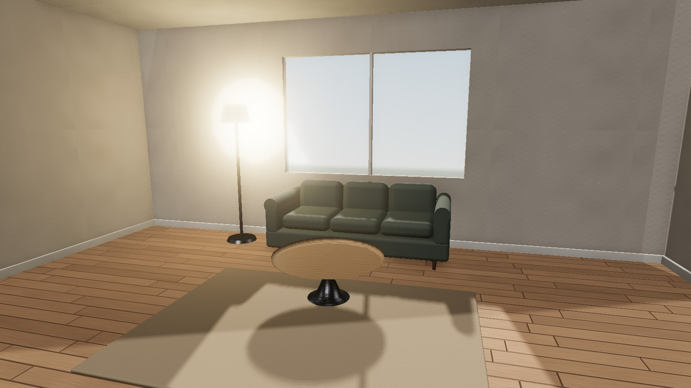
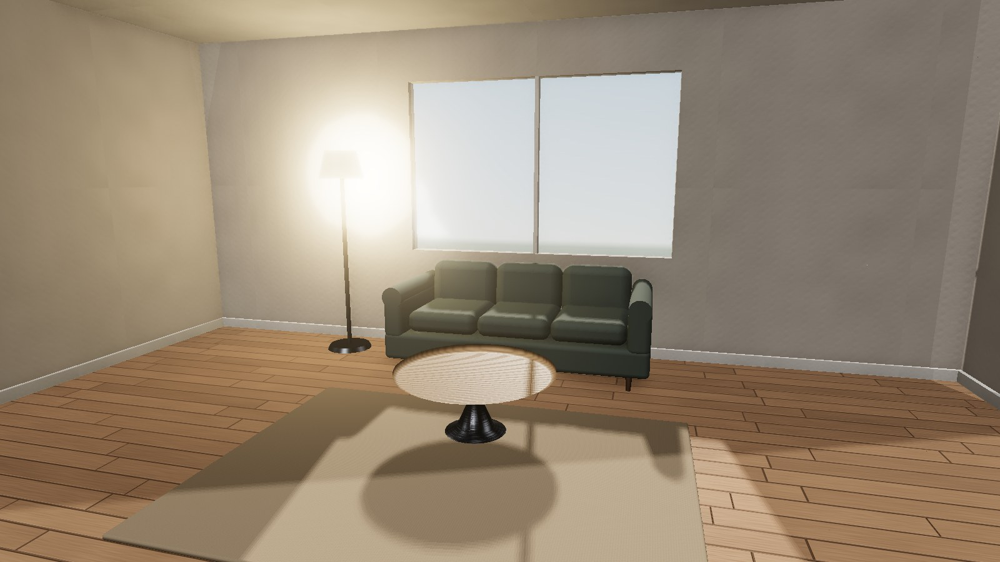
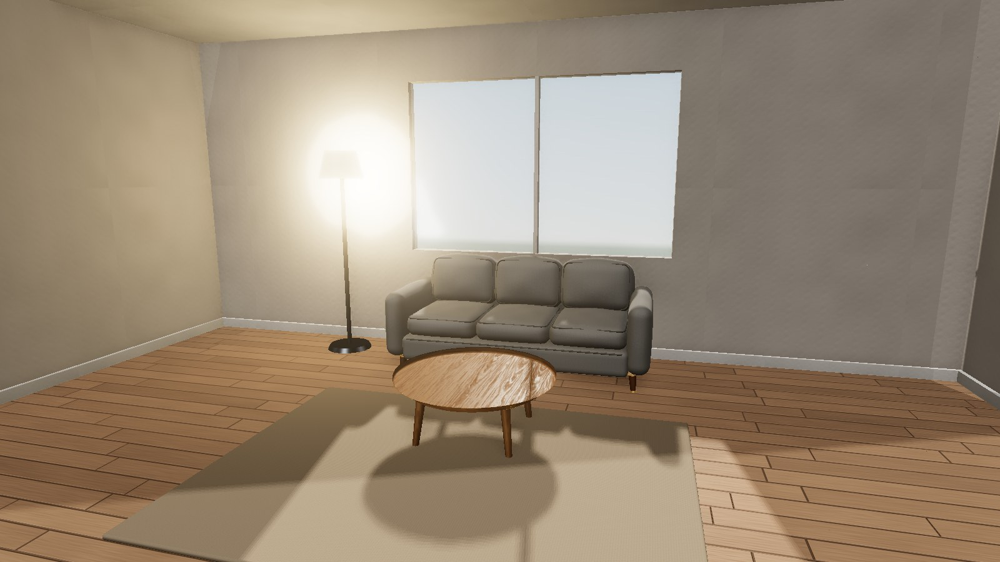
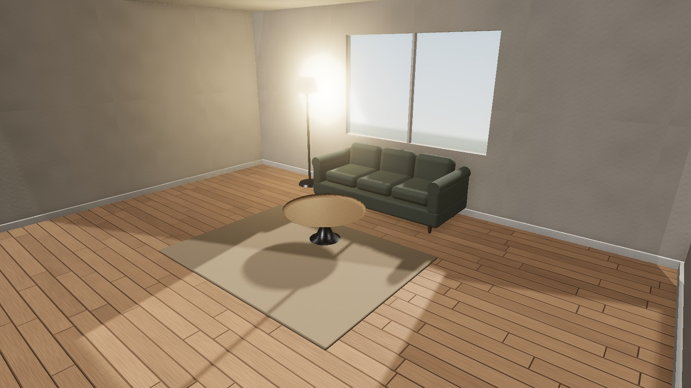
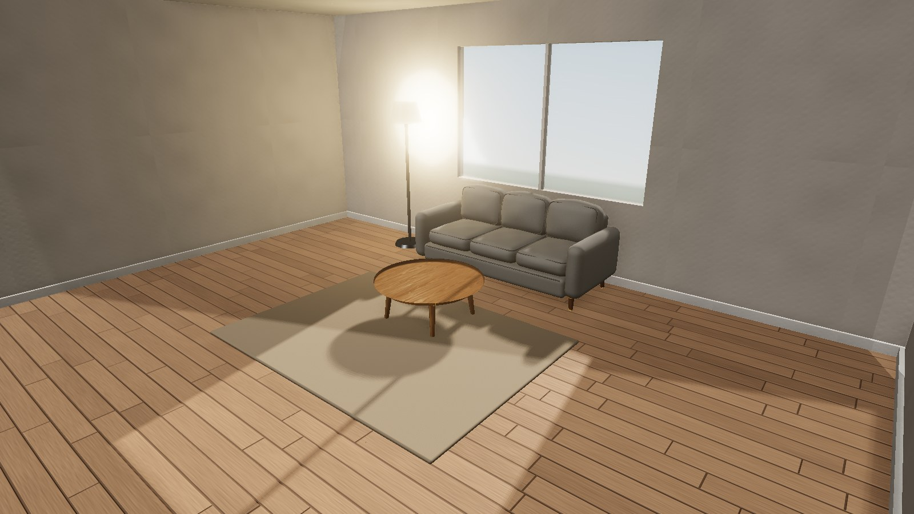
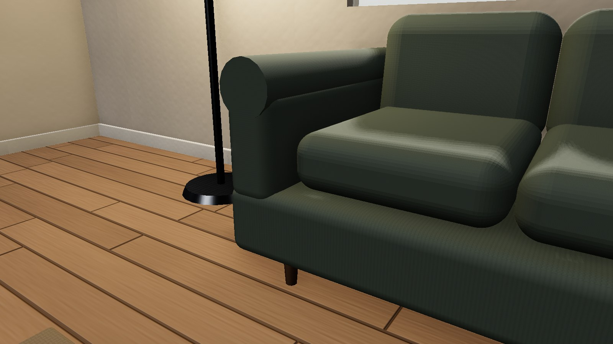
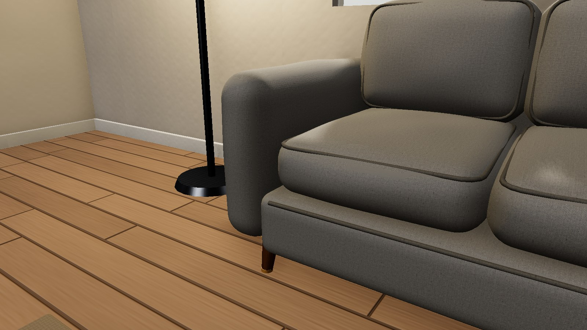

Real Electron captures (1600 x 900, pixel ratio 1, fixed cameras, pinned layout, same FOV and exposure within each row). Before is the original code and lighting. Before, under the new lighting is the old sofa and table with today's lighting changes (shadow bias, dusk/golden window view), so the material change is not credited with the lighting change. After is the new pieces. Concept finishes: Poly Haven CC0 "Poly Wool Herringbone" and "Oak Veneer 01"; not any retailer's finish.
Daylight
Full room, eye level

Before (original code)

Before, under the new lighting

After
Full room, raised corner

Before (original code)Before, under the new lighting

After
Sofa: cushion, arm and seam
Before (original code)

Before, under the new lighting

After
Sofa: fabric against wooden leg
Before (original code)Before, under the new lighting